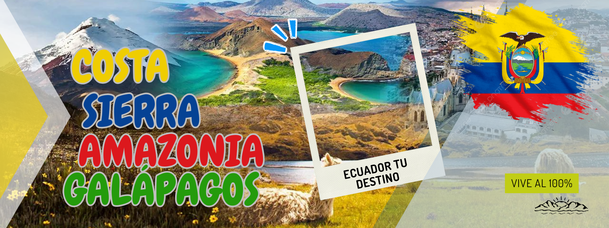

Guayaquil es conocida por el toque tan especial que le dan sus coloridas casas a la ciudad. Sin embargo, aquí vamos a destacar otro sorprendente lugar que llama la atención a todos los que lo visitan: el Parque de las Iguanas.
Es extraño ver cómo este exótico animal campa a sus anchas por uno de los parques más famosos de Guayaquil, donde además se encuentra la Catedral Metropolitana de la ciudad. No exageramos al decir que en este lugar hay más de un centenar de iguanas, que están totalmente familiarizadas con los humanos, a las que no podrás dejar de sacar fotos desde todos los ángulos.
Cómo llegar al Parque de las Iguanas: el nombre oficial de este parque es Seminario y se encuentra a tan solo unas cuadras del Malecón 2000, por lo que puedes llegar fácilmente caminando.
Es muy común entre los turistas que llegan a Ecuador en busca de una playa visitar Montañita, un destino muy conocido entre los mochileros de Sudamérica. Sin embargo, este país cuenta con muchos kilómetros de costa con playas menos conocidas como la de Mompiche.
Esta playa de fina arena es perfecta tanto para descansar y disfrutar de la gastronomía de la zona (encocados, arroz marinero, etc.) como para hacer deportes acuáticos o dar un paseo por su zona boscosa, en la que encontrarás monos y otros animales.
Cómo llegar a la playa de Mompiche: la playa de Mompiche se encuentra en la provincia de Esmeraldas, en el noroeste de Ecuador. Desde Quito, tendrás que tomar un bus en la Terminal Terrestre Carcelén con destino a Esmeralda (6-7 horas de trayecto). Cuando llegues, deberás tomar otro transporte hasta Mompiche (a 2-3 horas).
El lugar de Ecuador más famoso para hacerte la foto perfecta para Instagram. Y no es para menos, ya que el paisaje que rodea al columpio del fin del mundo es sencillamente espectacular: los Andes ecuatorianos, enormes y verdes montañas, cascadas infinitas… ¡las mejores vistas de tu vida desde un columpio!
Cómo llegar al columpio de Baños: el primer paso es desplazarte hasta la ciudad de Baños. Una vez aquí, solo tendrás que tomar un bus (salen una gran cantidad de buses al día) que te lleve hasta el famoso columpio.
Uno de los más famosos lugares de Ecuador es la conocida como Mitad del Mundo. Se trata del punto exacto por el que pasa la línea ecuatorial, que divide al hemisferio norte del hemisferio sur, y en el que podrás hacer “mágicos” experimentos.
El más famoso es la prueba del huevo: en un espacio preparado exclusivamente para ello podrás desafiar a la gravedad colocando un huevo en vertical que, según la teoría, no se caerá por encontrarnos en el punto en el que nos encontramos. Además, podrás comprobar por ti mismo el efecto Coriolis, por el que el agua del inodoro gira para un lado en el hemisferio norte y para otro en el hemisferio sur.
Cómo llegar a la Mitad del Mundo: este lugar se encuentra a tan solo 28 kilómetros al norte de Quito, por lo que es muy simple encontrar un bus que te lleve hasta allí. Además, puedes hacer la excursión con nuestro City Tour y Línea del Ecuador, con el que recorreremos la capital ecuatoriana y visitaremos la Mitad del Mundo.
Sin ninguna duda, un infaltable en la lista de lugares de Ecuador son las Islas Galápagos. Este archipiélago cuenta con una varieda de fauna de las más increíbles de todo el planeta, entre la que destacan sus asombrosas tortugas gigantes.
Además, en las Islas Galápagos hay playas alucinantes, no solo con aguas de color cristalina, sino también alguna, incluso, con arenas de un color rojo intenso y con animales paseando por ellas con total tranquilidad.
Cómo llegar a las Islas Galápagos: las Galápagos se encuentran en pleno océano Pacífico, a 1400 kilómetros de Quito. Por ello, la única forma que hay de llegar es hacerlo en avión.
Hay pocas cosas en el mundo que sean más emocionantes y provoquen más descarga de adrenalina que subir hasta la cima de un volcán activo. Ecuador es uno de los países con más volcanes en todo el mundo, por lo que esta actividad es totalmente factible.
Uno de ellos es el Cotopaxi, situado en un parque nacional en la zona norte del país, a tan solo dos horas de Quito. Aquí podrás disfrutar de las vistas del volcán desde abajo o aventurarte a subir hasta su cima, a 5897 metros sobre el nivel del mar.
Uno de ellos es el Cotopaxi, situado en un parque nacional en la zona norte del país, a tan solo dos horas de Quito. Aquí podrás disfrutar de las vistas del volcán desde abajo o aventurarte a subir hasta su cima, a 5897 metros sobre el nivel del mar.
Cómo llegar al Parque Nacional de Cotopaxi: desde la Terminal Terrestre Quitumbe, en Quito, salen varios autobuses con dirección a Cotopaxi. Deberás informar al conductor de que deseas bajarte
en el Parque Nacional. Después, tendrás que caminar aproximadamente una hora hasta llegar a la entrada.Como ocurre en todos los países sudamericanos, la artesanía es una actividad de gran importancia en Ecuador. Un ejemplo de ello es la ciudad de Otavalo, al norte de Quito, donde cuentan hasta con una plaza conocida como de los Ponchos, en la que encontrarás preciosas y variadas piezas de artesanía.
Además, puedes aprovechar la visita a Otavalo para conocer los lugares naturales que le rodean como el Lago San Pablo o las cascadas de Peguche
Cómo llegar a Otavalo: para llegar hasta Otavalo desde Quito por tu propia cuenta tendrás que tomar un bus en la Terminal Terrestre Carcelén. El recorrido es de aproximadamente dos horas.
También puedes conocer esta ciudad y sus alrededores con nuestro Full Day Otavalo, una excursión con transporte y almuerzo incluidos.
Para aquellas personas a las que les gusta conocer tradiciones curiosas y divertidas en los países que visita, recomendamos los carnavales de Ambato, en la zona central de Ecuador. Este evento, conocido en todo el país como la Fiesta de las frutas y las flores, llena la ciudad de bailes, coloridos desfiles e increíbles y gigantes obras de arte hechas con flores y frutas.
Además, su origen es muy interesante: esta fiesta se empezó a realizar para nunca olvidar el terremoto que el 5 de agosto de 1949 azotó a la zona, como una forma de celebrar la vida.
Cómo llegar a Ambato: en la Terminal Terrestre Quitumbe de Quito podrás encontrar buses con diferentes horarios que te llevarán hasta esta ciudad. El trayecto es de aproximadamente dos horas de duración.